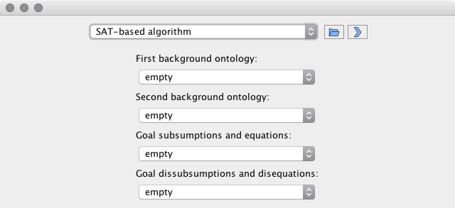
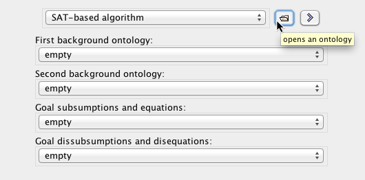
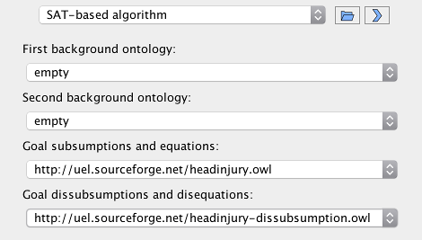
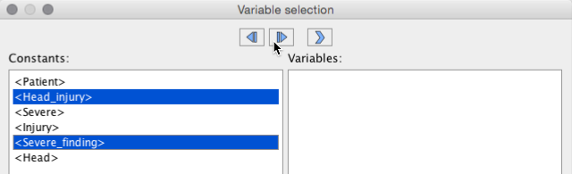
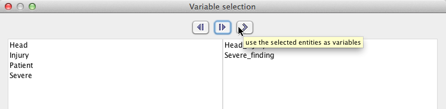
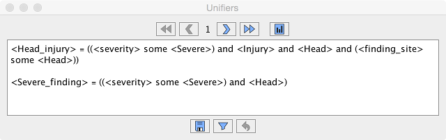
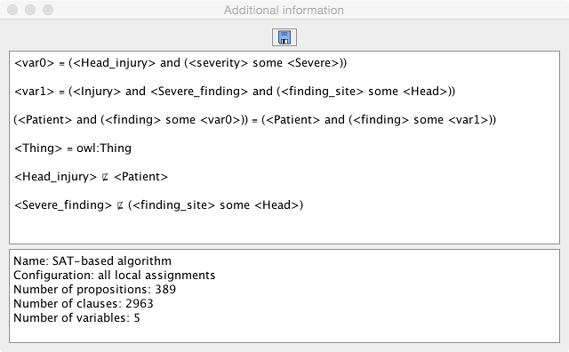

... or as a plug-in inside Protégé:

The user interface is the same in both cases. One can open the ontologies describing background knowledge and the unification problems using the "open" button of UEL, or using the Protégé menu (all ontologies to be used have to be opened in the same Protégé window).

For our example, we have openend the ontologies headinjury.owl and headinjury-dissubsumption.owl and selected them as the positive and the negative part of the (dis)unification problem, respectively. This small example consists of one equation and two dissubsumptions. A more detailed description can be found in Franz Baader, Stefan Borgwardt, and Barbara Morawska: Dismatching and Disunification in EL. In Proc. RTA, 2015. UEL only recognizes OWL axioms of types subClassOf and equivalentClass in these input ontologies. Additionally, up to two background ontologies can be selected to provide background knowledge in the form of acyclic definitions. It is important that all OWL classes that should be shared between the selected ontologies are identified by the same IRIs in all ontologies.

The next step is to select a unification algorithm to solve the problem. There are different advantages and disadvantages to each of them, which are discussed in the following publications. The SAT-based algorithm was developed in Franz Baader and Barbara Morawska: SAT Encoding of Unification in EL. In Proc. LPAR, 2010, the rule-based one Franz Baader and Barbara Morawska: Unification in the Description Logic EL. Logical Methods in Computer Science 6(3), 2010. Additionally, an experimental encoding into ASP (answer set programming) has been implemented, which however requires the ASP solver clingo to be installed and available via the PATH environment variable of the JVM instance UEL is running in. Both the SAT and the ASP encoding provide the option to compute only so-called minimal assignments; for details, see Franz Baader, Stefan Borgwardt, Julian Alfredo Mendez, and Barbara Morawska: UEL: Unification Solver for EL. In Proc. DL, 2012. It should be noted that negative constraints (dissubsumptions and disequations) are currently only supported by the SAT-based algorithm.

Once an algorithm has been chosen, a click on the arrow button opens a new window that allows to choose which OWL classes are supposed to be treated as variables, and which as constants. Initially, all classes are marked as constants, which are listed in the left column. Using the two first buttons, one can move classes to the second column, to designate them as variables, and back.

A click on the third button starts the unification process.

Using the arrow buttons in the next window, one can request the computation of the next unifier, as well as navigate within the set of already computed unifiers. The first and fourth button jump to the first and last unifier, respectively. In case the problem has no solution, the text "[not unifiable]" will be displayed after the first unifier has been requested. Depending on the size of the problem and the chosen unification algorithm, the computation may take a long time, even to get just the first unifier.

In this view, one can also save the currently displayed unifier into an ontology file that contains the displayed definitions for the variables. The recognized file extensions are .krss (for KRSS format as displayed), .owl (for OWL/XML format), and .rdf (for RDF/XML format).

Using the last button, a new window is opened that contains additonal information about the actual (dis)unification problem that was sent to the unification algorithm. Due to some preprocessing, additional auxiliary variables may have been introduced. This representation can be saved as a text file. In the bottom, some additional statistics about the unification process are displayed, such as the number of generated clauses for the SAT encoding.
